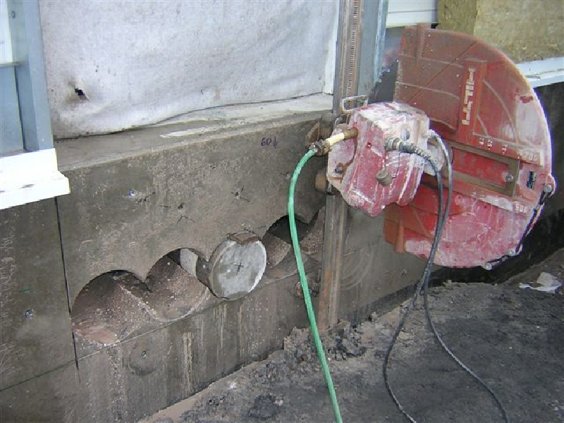

Stěnové řezání betonu, dveří v panelových domech
Stěnové řezání je technologickou metodou, při které se řezací pila pohybuje po vodící liště nad řezanou konstrukcí a tu řeže. Pilu je možné nakotvit na podlahy, stěny či římsy. Vedení po kolejnici vám zaručí vysoce prezizní otvory. Stěnovou pilu lze navíc použít v libovolné poloze. Obraťte se na nás a vyžijte našich profesionálních služeb.
Nabízíme prohlídku objektu a poradenství zcela zdarma. Kontaktujte nás!
Stěnová pila s diamantovým kotoučem, který je poháněn hydraulicky nebo elektricky zaručuje rovný a čistý řez i v betonu s extrémně tvrdými přísadami. Diamantové řezání lze použít při řezání otvorů oken, dveří, stropů stěn či zařezávání betonových bloků. Síla řezaného materiálu je až 55 cm. Při oboustranném řezu je síla materiálu až 110 cm.
Stěnové řezání má široké využití
- řezání otvorů dveří, oken či stropů stěn/li>
- ze řezat otvory různých tvarů
- odřezávání bloků při demoličních pracích
- řezaní podlah
- šikmé řezy, dilatační spáry
- vyřezy kanálků pro odvodňovací systémy
- přizpůsobovací práce jakými jsou přílezy balkónů či zábradlí
Vypracujeme vám cenový návrh stěnového řezání zdarma.
Přizpůsobíme se vašim požadavkům
Naším cílem je spokojený zákazník, proto se snažíme o individuální přístup. Díky našemu více jak dvacetiletému působení na trhu jsme získali mnoho cenných zkušeností, které můžeme nyní nabídout svým zákazníkům. Využijte našich profesionálních služeb, jsme opravdoví odborníci ve svém oboru.
Použití nejmodernějších technologií spolu s dobře odvedenou prací nás řadí na přední místa ve východočeském regionu.
Máme zkušené pracovníky, kteří se vám budou ochotně a pečlivě věnovat - přijedou si obhlédnout objekt, navrhnou to nejvhodnější řešení a cenovou kalkuluaci, provedou samotnou práci, a to vše kvalitně a rychle. Navíc za velmi příznivé ceny, které nezruinují váš rozpočet.